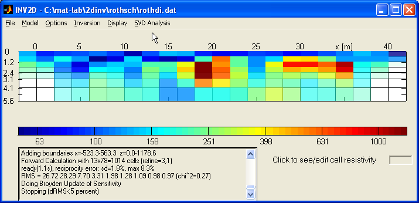
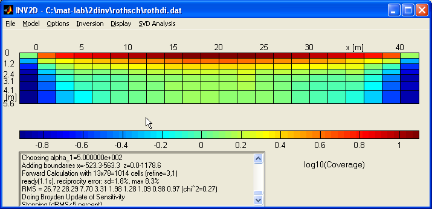
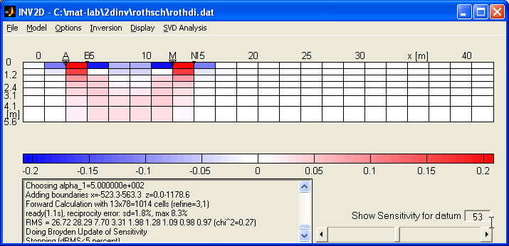
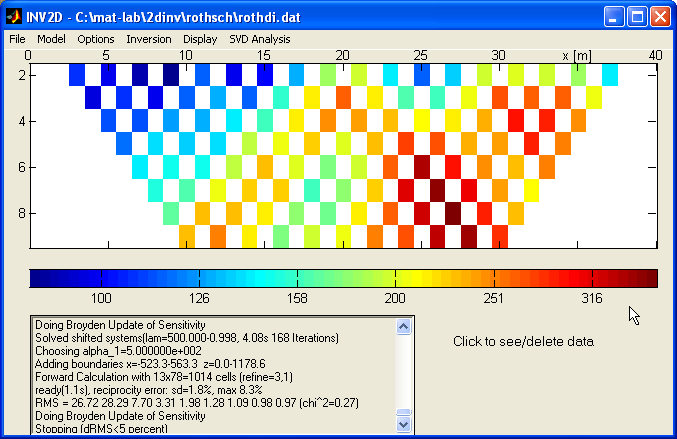
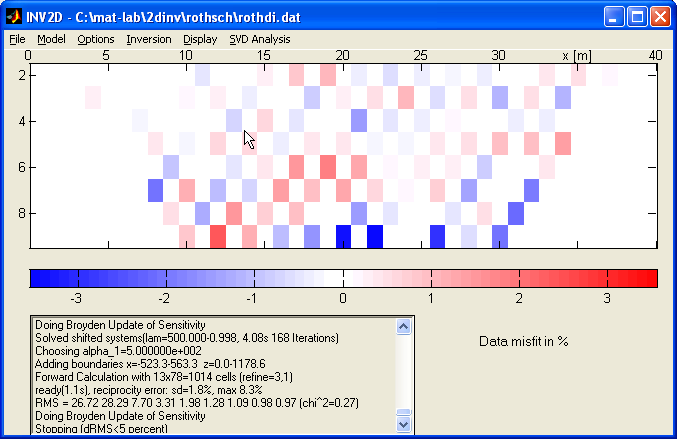
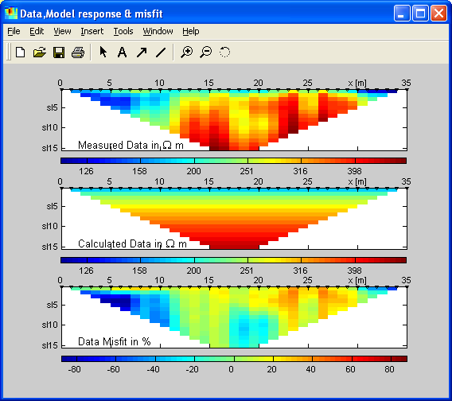

DC2DInvRes - Show Menu
Model
The model display shows the resistivity of the model section. There are a lot
of options for that descibed in the options menue.
By clicking on model cells the cell boundaries and the resistivities are displayed.
This mode can also be used for interactive modelling
by typing a resistivity value into the edit window and clicking on model cells
or drawing ragged boxes.

Hotkey: Shift+M
Coverage
The Coverage is defined by the sum of the (absolute values of)
sensitivities over all measurements and can be displayed like a model section.

In analogy to ray path tomography it's something like total raypath and gives
information on how well the model cells are "covered" by the data
set. It is used for alpha mapping the model section to avoid over-interpretation
of anomalies in bad covered regions such as near the model boundaries.
Sensitivities
Furthermore, it is possible to display the sensitivity for every single datum
point. A positive sensitivity(red) leads to an increased apparent resistivity
when the cell resistivity is rised, negative sensitivity(blue) lower the apparent
resistivity. The measurement is insensible to regions of zero sensitivity(white).
Regarding this we have a first concept of detectability and resolveability of
underground structures.

By moving the slider (or typing datum number) we can switching to all data
points.
Display data points
To display the complete data set it is useful to plot every datum point with a
single block. The following section shows a dipole-dipole dataset (21 electrodes,
a=2m) dipole length as a function of midpoint (x) and separation (dipole
distance by dipole length).

By clicking on a single datum point a dialog shows its electrode positions
and the measured resistivity. The user is able to delete this datum point clicking
on "yes".
Hotkey: Shift+D
Error
In the same manner as for plotting the data one can display the (measured or
estimated) standard deviations of each datum point.
Forward Response
The forward response of the current model ist diplayed in the same way like
the data.
Hotkey: Shift+R
Data Misfit
Watching the data misfit (difference between datum point and forward response
in percent) it is possible to see how the data are fitted by the model. Ideally,
the data are fitted giving a misfit of gaussian errors showing no significant
function of space.

Misfit per Error
To estimate, how well the data are fitted, the misfit is divided by the standard
deviation and plotted.
Ideally, the misfit per error is (again) randomly distributed and near +/- 1 at
the end of inversion process.
Compare data
To have an overview on fitting the data it is useful to see data, forward response
and misfit in one window. Data points and forward response are plotted using the
same colorbar. The plots are placed in a seperate window, which keeps updated
if the model (and thus its response) is changing. It is recommended to create
the window at the beginning of the inversion.

Hotkey: Shift+C
Voltage
If present, the measured (or in the error GUI estimated) voltage (absolute)
is displayed in data type (logarithmic colorbar).
Current
If currents are present in the data, they are displayed in mA with log-scaled
colors.
IP Data
If the data file contains IP data, they can be displayed and used for inversion
of chargeabiliy.
Chargeability
Once a chargeability model has been derived by the IP data, it can be displayed.